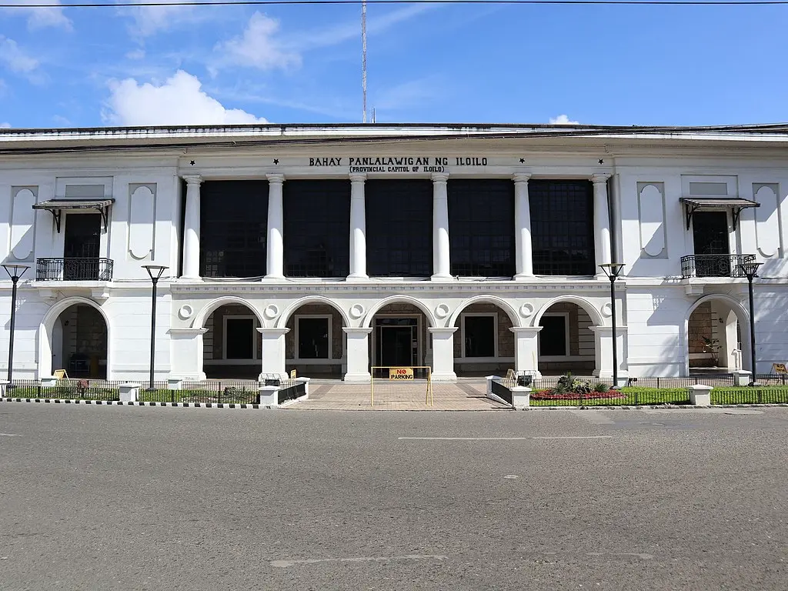

A historical Baroque-Renaissance church built in 1845, which served as the headquarters of the revolutionary forces under General Martin Delgado.

A pristine island province located just across the Iloilo Strait, globally celebrated for exporting the sweetest mangoes and tranquil eco-beaches.

The premier open-air lifestyle and shopping avenue in the heart of Mandurriao, anchoring the modern commercial boom of Iloilo City.

An award-winning urban waterfront park that restored the ecological vitality of the Iloilo River while providing kilometers of pedestrian-first scenic promenades.

A restored neoclassical public square fronting the famous Gothic-Renaissance Molo Church, surrounded by century-old heritage mansions.

A preserved 1920s heritage mansion showcasing classic Philippine colonial architecture, cultural exhibitions, and artisanal local crafts.

The venerable Old Provincial Capitol built in 1873, representing centuries of administrative history and provincial governance in Western Visayas.

Housed inside the historic Ynchausti y Compañía building, chronicling the rich trade routes, sugar boom, and mercantile legacy of Iloilo.